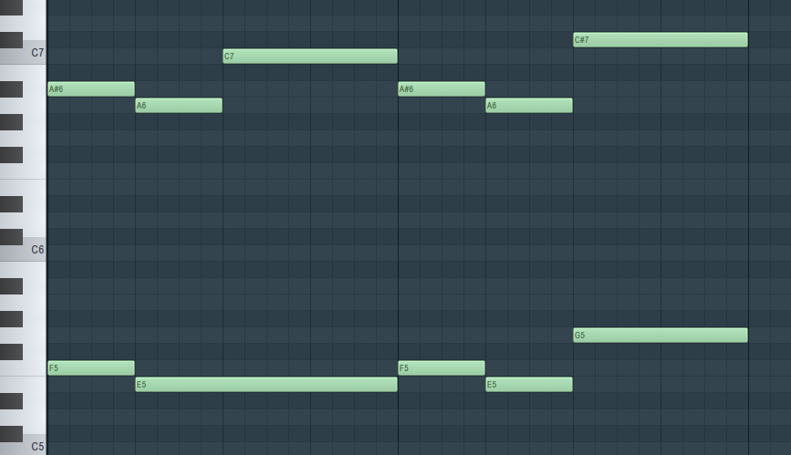
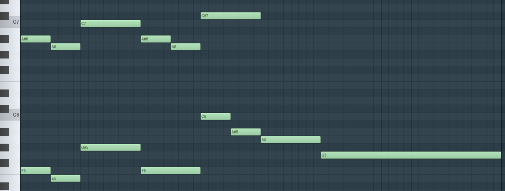
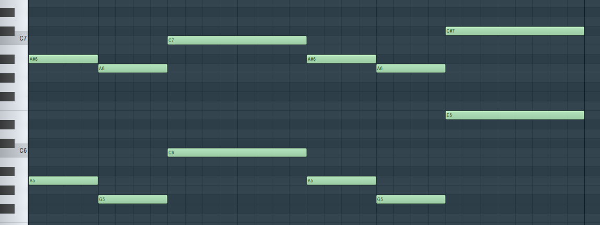
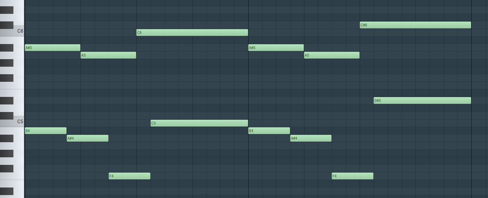

Appearances
You Idiot
'Your Best Nightmare': 0:00-0:29
At this speed, it's a little hard to hear, so here it is sped up to 3x speed:
Your Best Nightmare
'Your Best Nightmare': 0:00-0:15, 0:22-0:45, 3:28-3:50
Later in the song, the motif is played in double time:
'Your Best Nightmare': 2:28-2:51
During timestamps 1:26-1:47, when 'Your Best Nightmare' would normally play as indicated by the structure of the song, a heavily distorted version of 'Your Best Friend' plays instead.
Burn in Despair!
'Your Best Nightmare' and 'Burn in Despair!': 0:00-0:14
Giga Size
Before we venture into 'Your Best Nightmare' appearing in Deltarune , let's first look at 'Burn in Despair!' in Giga Size .
'Burn in Despair!': 0:15-1:31
Note how the use of 'Burn in Despair!' here parallels the phase transition in Asriel's fight.
Interestingly, this isn't the only time a percussion track from Undertale suddenly reappears in relation to Queen: 'Anticipation', the percussion of Undertale 's battle themes, reappears in both Powers Combined and Knock You Down !! .
(See also: 'Queen' )
Imminent Death
Alright, back to 'Your Best Nightmare'.
'Your Best Nightmare': 0:05-0:17

(Above: 'Your Best Nightmare' as heard in Your Best Nightmare ; below: the melody of Imminent Death )
Looking at 'Your Best Nightmare', note the structure: a small descent, followed by a leap up, a return to the starting note, another small descent, and a higher leap up.
To me, the most important part of this leitmotif is this descent, followed by a leap, which is then made bigger in the second repetition.
Now looking at Imminent Death , it's exactly the same, albeit ommitting the first leap, and having a slightly smaller leap at the end.
This may seem like a big deal, but note how long the first E is held - it leaves a gap, that the later E -> G progression recontextualizes as being where a step up would have been.
Additionally, the gap also emphasizes the later G as being relatively high compared to the rest of melody, reflecting how in the original melody of 'Your Best Nightmare', the C# is the highest point of the melody, and is in contrast to the C.
That is to say that although it is literally different in some places, the melody is made in such a way that what it implies is very similar to 'Your Best Nightmare'.
Vs. Susie
'Your Best Nightmare': 0:06-0:53
'Susie' )

(Above: 'Your Best Nightmare' as heard in Your Best Nightmare ; below: the opening melody of Vs. Susie )
Right out of the gate, the first three notes of Vs. Susie 's quote are identical to not only the latter three notes of 'Your Best Nightmare', but also, crucially, to the last three notes of Imminent Death 's melody.
That is to say, that this song serves as an extension of the melodic concept of Imminent Death , taking the melody of 'Your Best Nightmare' to new places. Remember that in-game, Imminent Death plays just before Vs. Susie , and they both use the same overdriven electric guitar.
Even then, I'd argue the similarities to 'Your Best Nightmare' persist: note how the long descent in the latter half of the Vs. Susie quote mirrors the higher leap in 'Your Best Nightmare'.
Once again, although they are different in some ways, I argue that Vs. Susie definitely includes and expands upon the 'Your Best Nightmare' leitmotif.
The Dark Truth
'Your Best Nightmare': 0:00-0:28
'Don't Forget' and 'Girl Next Door' )

(Above: 'Your Best Nightmare' as heard in Your Best Nightmare ; below: the opening melody of The Dark Truth )
Note that the echo is not included, as it doesn't really affect the validity of the quote, in my opinion.
In this example, although the intervals are different (larger descent, larger leaps), the contour is maintained one to one, and so is the important structure of "descent, followed by a leap, which is then made bigger in the second repetition".
This isn't to say the intervals aren't important - every example of this leitmotif thus far has maintained the [-1] intervals, so the fact that The Dark Truth 's quote has [-2] intervals is not to be ignored.
In my opinion however, the structural arguments are simply too strong to ignore, and given how other examples in Deltarune use the motif to imply a more general sense of terror (such as the existential threat of the roaring), the context of the song works in the quote's favor as well.
Digital Roots
'Your Best Nightmare': 0:00-0:16
spamton_house.ogg is an unused version of Digital Roots presumably intended to play in Spamton's shop, in place of Dialtone .
Digital Roots , and so it won't be covered here.
For me, this quote is difficult to hear the exact notes for, and so I can't be one-hundred-percent confident of my transcription here.

(Above: 'Your Best Nightmare' as heard in Your Best Nightmare ; below: the melody of Digital Roots )
Once again, the ever so important structure is maintained, but with a notable difference in the contour:
Digital Roots has an extra note in each repetition, elongating the descents and leap ups, making the melody sound slurred overall.
Obviously, with this, the intervals don't quite match up either; the only ones that can really be compared are the small descents, which do indeed maintain the [-1] interval as in 'Your Best Nightmare'.
Additionally, the context, like in The Dark Truth , adds up: it's a spooky leitmotif for a spooky area.
Overall, as I consider the structure to be the most important part of identifying this leitmotif, I believe this is an intentional connection.